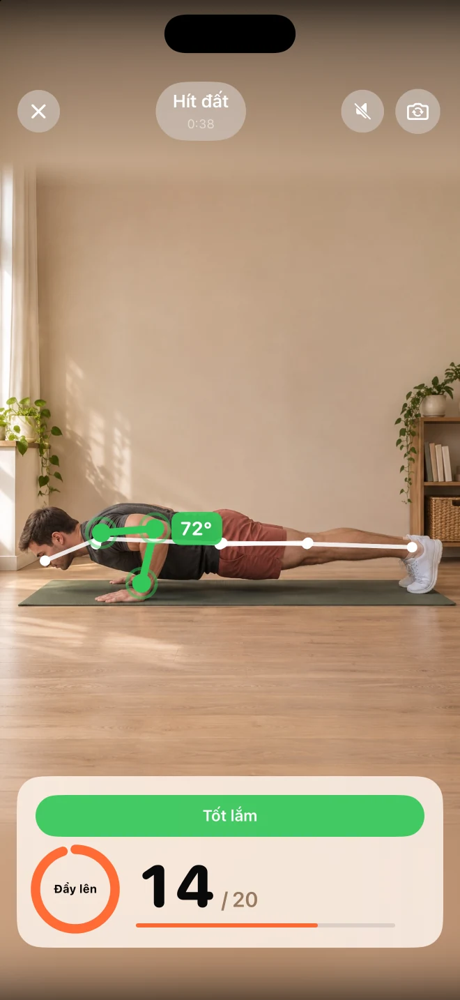
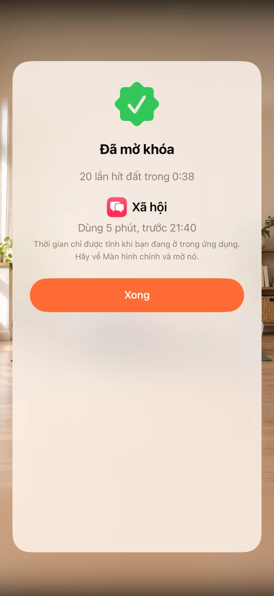

Chọn những yếu tố gây xao nhãng của bạn.
Chọn những ứng dụng mà bạn muốn hạn chế sử dụng. Unlocky sử dụng tính năng Screen Time của Apple để khóa chúng.
Vận động một chút trước khi tiếp tục.
Ít tự động hơn. Nhiều điều bạn kiểm soát hơn.
Khóa những ứng dụng chiếm hết ngày của bạn. Thực hiện một hiệp chống đẩy, squat hoặc bật nhảy dang tay chân để nhận vài phút truy cập.
Miễn phí · không cần đăng ký · không cần tài khoản.


Ảnh chụp màn hình ứng dụng
Tính năng
Chọn những ứng dụng mà bạn muốn hạn chế sử dụng. Unlocky sử dụng tính năng Screen Time của Apple để khóa chúng.
Chọn chống đẩy, squat hoặc bật nhảy. Camera iPhone của bạn sẽ đếm số lần bạn thực hiện, đồng thời cung cấp phản hồi trực tiếp.
Đặt phần thưởng và giới hạn thời gian hàng ngày của riêng bạn. Thời gian kiếm được sẽ được tính khi bạn sử dụng ứng dụng, sau đó khóa sẽ được kích hoạt trở lại.
Xem ứng dụng
Ảnh chụp màn hình thực tế. Giúp bạn hiểu rõ hơn về nội dung bên trong.

FAQ
Câu trả lời trước khi bạn bắt đầu
Unlocky sử dụng tính năng Screen Time của Apple. Bạn chọn các ứng dụng và cấp quyền truy cập trong quá trình thiết lập. Bạn có thể thu hồi quyền truy cập trong Cài đặt của iPhone.
Unlocky không ghi hình bạn. Các khung hình từ camera được phân tích trực tiếp trên iPhone. Video và ảnh không được lưu hoặc tải lên.
Có. Chọn các bài tập như chống đẩy, squat hoặc bật nhảy và đặt số phút cho mỗi hiệp. Giới hạn hàng ngày giúp bạn duy trì kỷ luật.
Có. Unlocky không có phí đăng ký hoặc tường thanh toán. Ứng dụng yêu cầu iPhone chạy iOS 17 trở lên.
Miễn phí · không cần đăng ký · không cần tài khoản.
Tập luyện theo tốc độ của bạn và dừng lại nếu cảm thấy đau. Nếu bạn có bất kỳ vấn đề sức khỏe nào, hãy hỏi ý kiến bác sĩ trước khi bắt đầu một thói quen tập luyện mới.